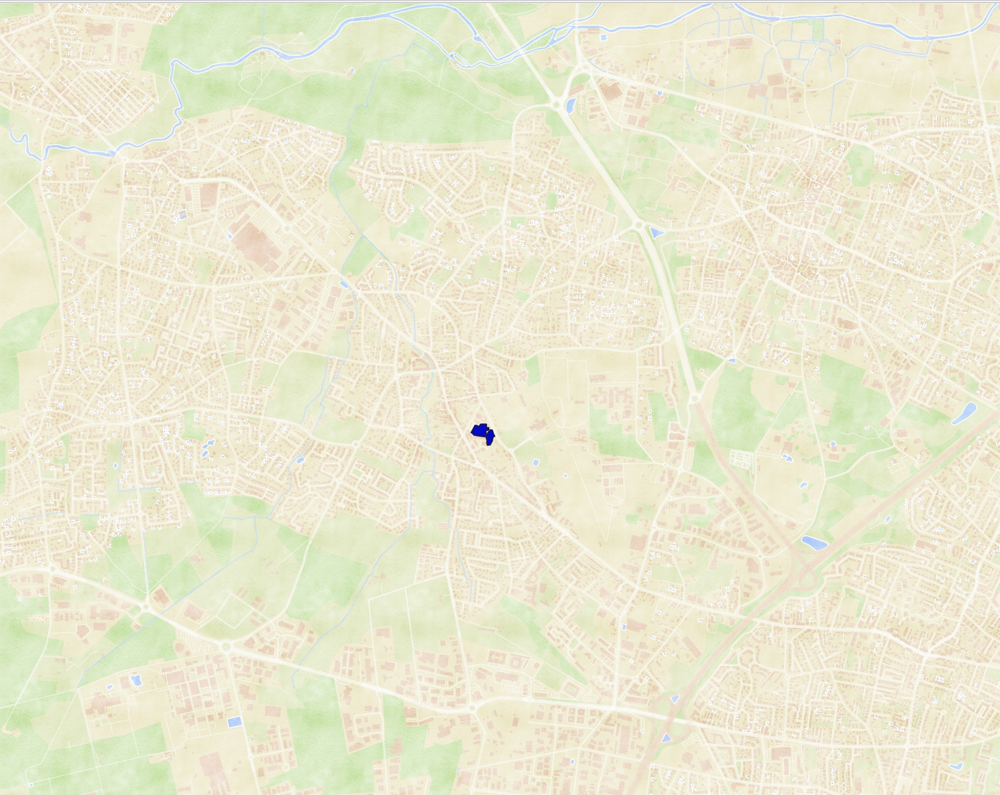
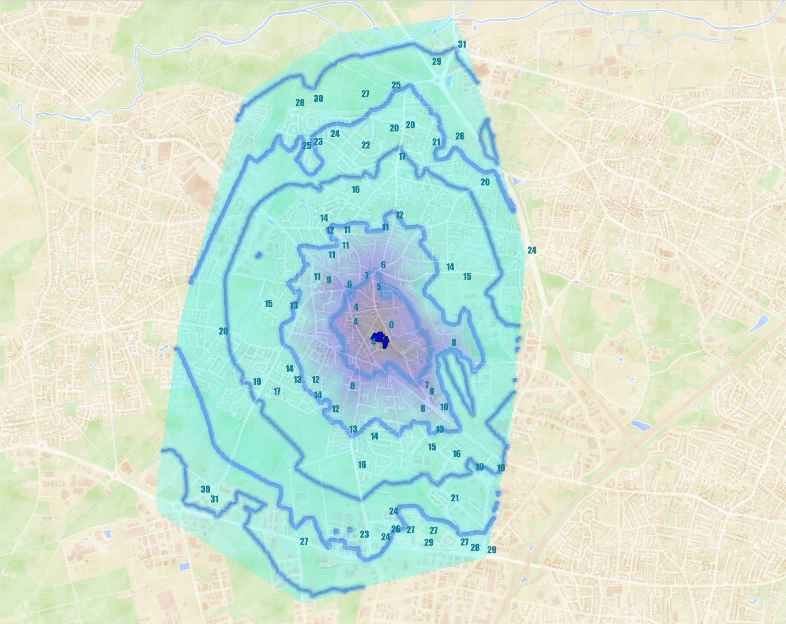
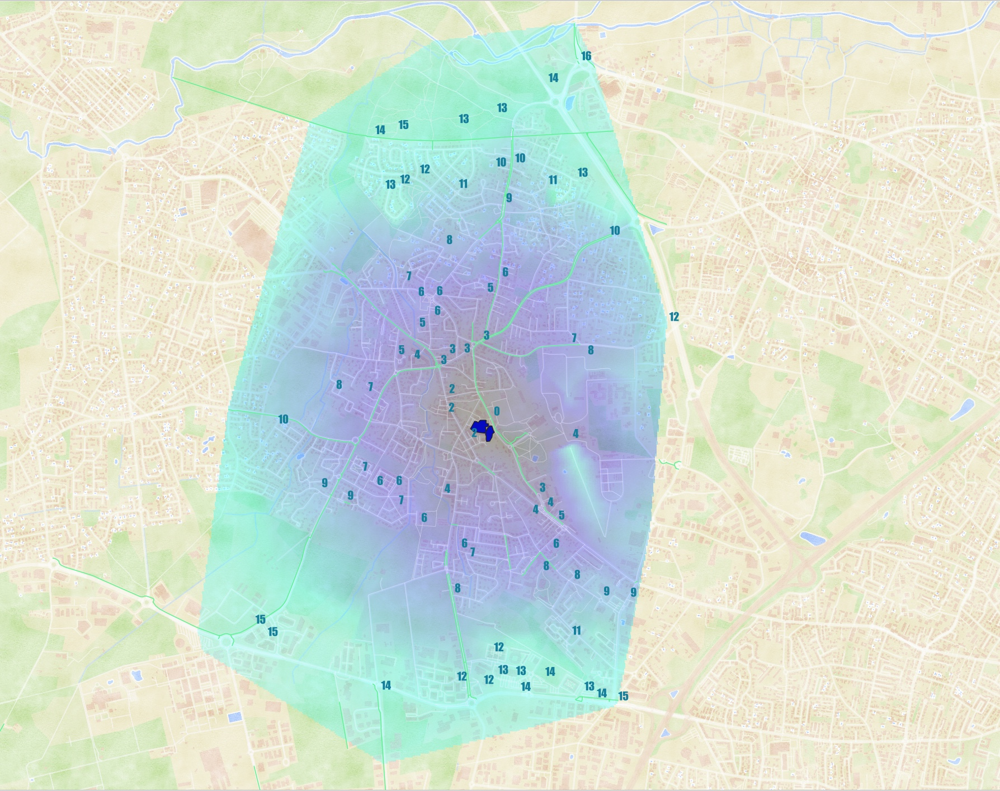
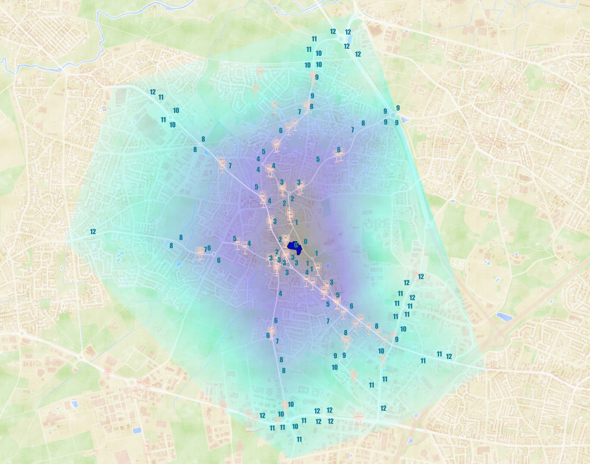

Cette cartographie interactive montre les temps d’accès aux écoles élémentaire et maternelle du centre du Haillan selon trois modes de transport : à pied, à vélo et en bus. Réalisée à l’aide des données d’OpenStreetMap et d’un algorithme de calcul d’isochrones sous QGIS, elle permet de visualiser finement la répartition temporelle des déplacements vers l’école.
Les zones colorées indiquent les distances-temps : la zone violette correspond à un accès en moins de 10 minutes. Chaque point est associé à un chiffre représentant le temps estimé, en minutes, nécessaire pour rejoindre l’école depuis ce point.
Les boutons interactifs permettent d’alterner entre les modes de déplacement afin de comparer leur efficacité respective. Ce travail propose une lecture synthétique de l’accessibilité scolaire sur le territoire, et peut servir d’appui à la planification des mobilités durables à l’échelle locale.
Ce projet fictif propose la conception d’une piste cyclable visant à renforcer la continuité des mobilités douces sur le territoire bordelais. L’aménagement relie la zone piétonne des Bassins à Flots à la piste cyclable déjà existante le long des quais, aujourd’hui séparées par un axe routier à fort trafic.
Réalisé sous SketchUp, ce travail met en œuvre des compétences en conception assistée par ordinateur (CAO) pour imaginer un aménagement cyclable sécurisé et intégré dans le tissu urbain dense.
Ce cas d’étude illustre la manière dont des outils de CAO peuvent accompagner la réflexion sur les continuités cyclables en milieu urbain, et servir de support à la préfiguration d’un aménagement cohérent, adapté aux enjeux de mobilité durable.